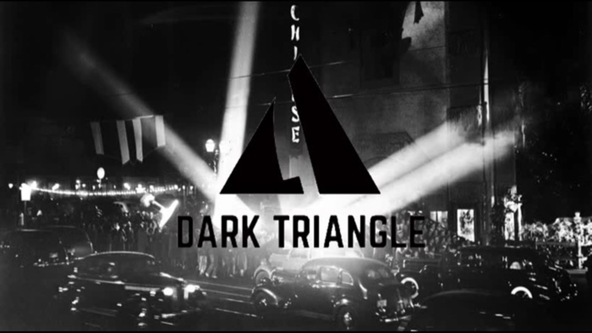
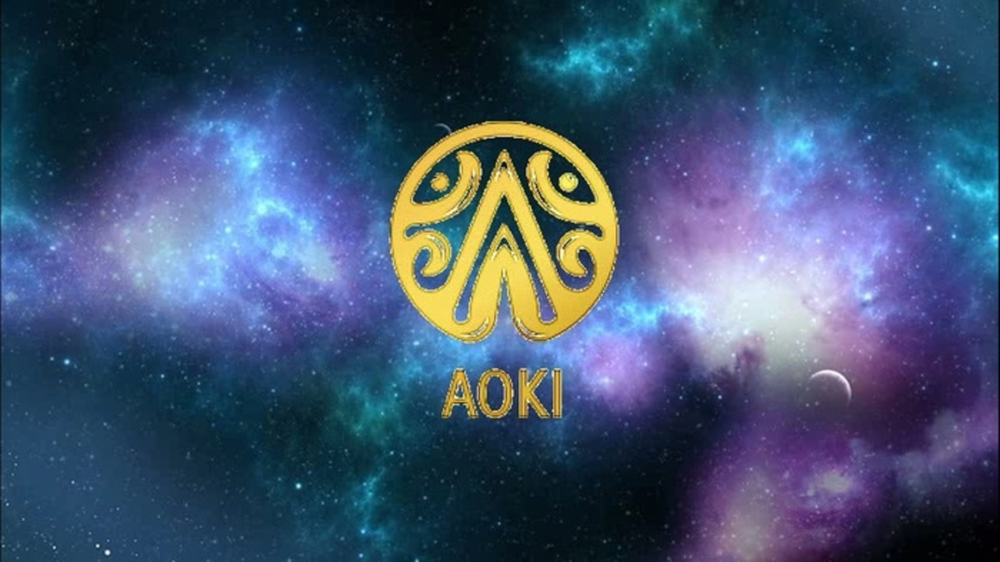

PROJETS
LES CHRONIQUES DE NAMIAMUR
Cette web-série suit les pérégrinations d'un aventurier de l'espace devant découvrir les secrets de
"La Saga de Namïamur". Les cinq premiers épisodes s'intéressent aux origines de mon épopée
littéraire tandis que les épisodes six à huit suivent une nouvelle intrigue.
Conçue avec les moyens du bord et une bande d'amis, les "Chroniques de Namïamur" ont été pour nous
l'occasion de truffer nos épisodes de nombreux caméos et références à la culture populaire. Des
documentaires montrant les coulisses de l'écriture, du tournage et de la post-production sont
également disponibles.

Dark Triangle
"Dark Triangle" est un roman noir prévu pour 2020. L' intrigue suivra un vieil acteur en déshérence
devant percer à jour un lourd secret de l'industrie du cinéma des années 30.

AOKI
"Aoki" est un roman post-apocalyptique prévu pour 2025, après la fin de la publication de "La Saga de
Namïamur". L'intrigue se déroulera en l'An 7012 et suivra les pérégrinations du Général Ford la Cité
d'Atlantis contre une organisation dévouée à l’extrémiste Styger. Sur sa route, Ford rencontrera la
mystérieuse Princesse Aoki. Leur aventure les conduira des profondeurs de la terre morte jusqu'aux
galaxies les plus éloignées.